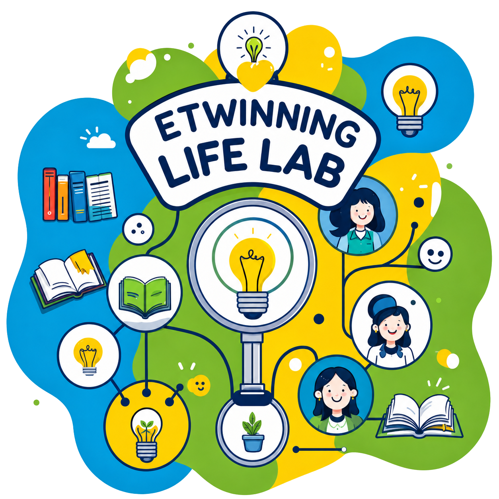

A European classroom community
LifeLab.
"LifeLab" is a cross-cultural eTwinning project that empowers students with essential life skills-digital literacy, emotional intelligence, communication, civic engagement, and critical thinking -through collaborative, creative, and experiential learning. Students from different countries will work together to explore, practice, and showcase these competencies in real-world contexts, preparing them to thrive in an ever-changing global society.

Why we twin
One project, two classrooms, zero borders.
Every eTwinning project pairs our students with a partner class abroad. Together they research, create, and present something neither class could have made alone — a shared magazine, a joint science log, a collaborative story told in two languages.
Learning that counts
Projects are built around real subject goals — language, science, geography, art — so collaboration supports the curriculum instead of competing with it.
Coordinated, not chaotic
Every twin project has two coordinating teachers who plan the timeline together, so students always know what's due and why.
A closed, supervised space
All exchanges happen through the eTwinning platform, moderated and visible to both schools — a genuinely safe way to meet someone new.
Currently twinning
A few projects in motion
From a shared weather diary with a school in Finland to a bilingual folk-tale anthology with Portugal — here's what our classes are building this term.
Skies Over Two Cities
with Vaasa, Finland
Two classes log daily weather and compare climate patterns across latitudes, publishing a joint monthly bulletin.
Tales We Both Tell
with Braga, Portugal
Students trade folk stories from home, then rewrite each other's tale in their own language and illustrate it.
Kitchen Table Science
with Kraków, Poland
A joint video series of simple physics experiments filmed in each other's kitchens, narrated in two languages.
From the classroom
See the projects in progress
Photos, drawings, and screenshots from this year's exchanges — video calls, joint artwork, and the odd classroom mascot making a guest appearance.
Open the galleryWho's behind it
Meet the coordinators
Every project has a teacher on each side keeping things on track. Meet the people who plan, translate, and troubleshoot the Wi-Fi.
Meet the team